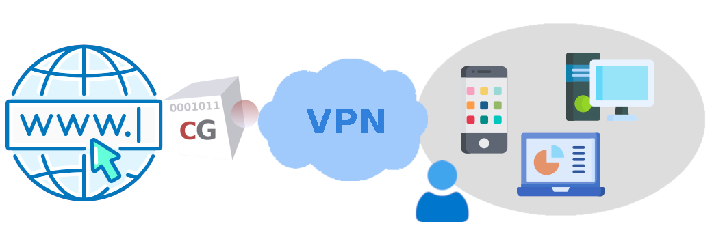
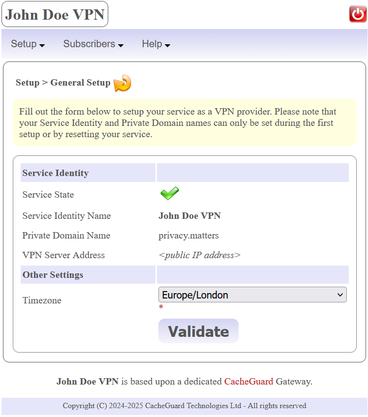
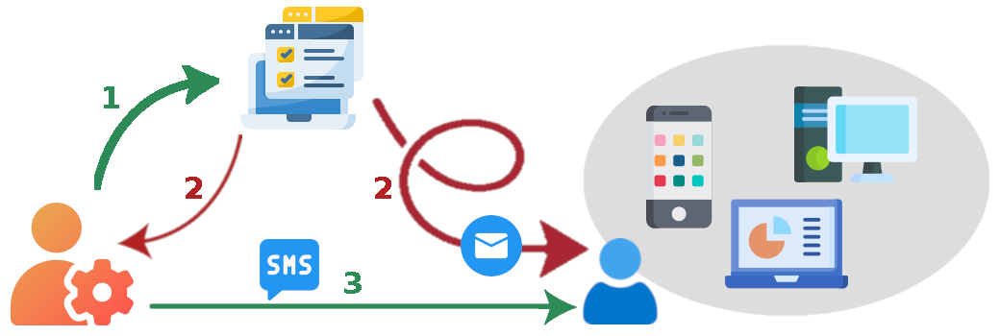
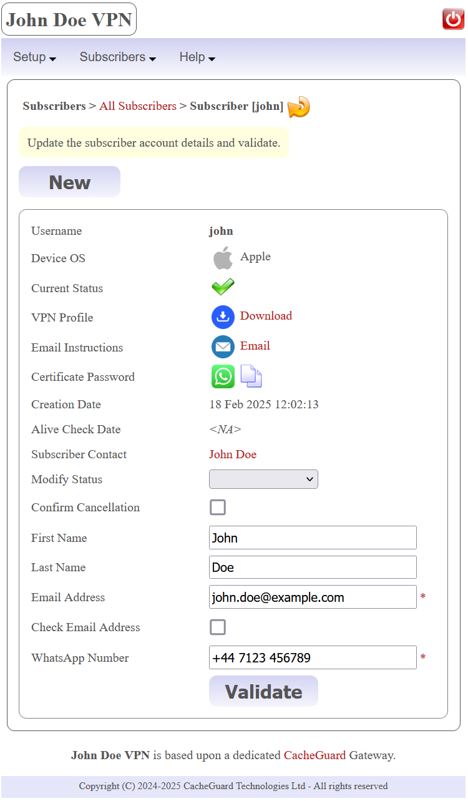
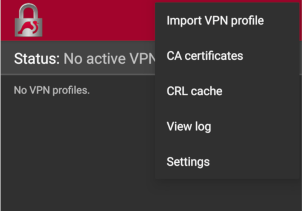
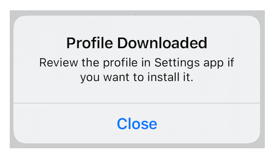
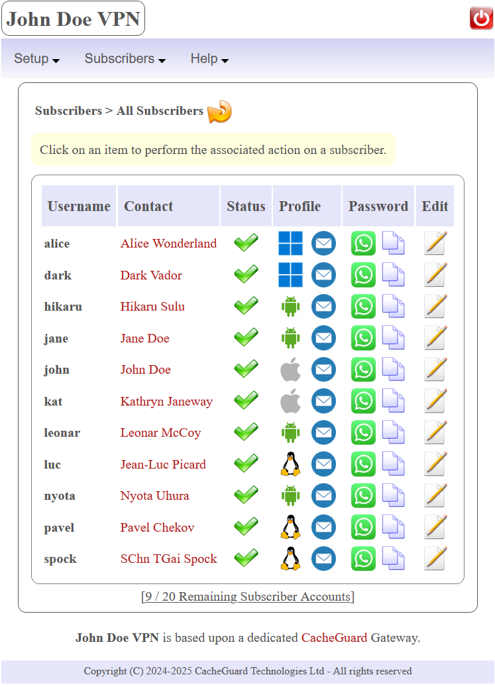
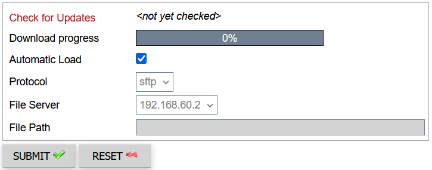

I. Introduction
VPN stands for Virtual Private Network and is a technology that guarantees the privacy and security of network traffic. Amongst others, a VPN can be used to privately and securely connect users to the internet. BeVyPN is a Web application that allows you to quickly setup your own VPN and create bevy of VPN accesses. This way, you can act as a VPN provider and propose your VPN services to your subscribers. With BeVyPN, you quickly create and manage VPN accounts and this without being a network and security expert.

BeVyPN is a friendly front end built on top of a powerful network appliance called CacheGuard Gateway. When you use BeVyPN, you actually use a dedicated and ready to use CacheGuard Gateway. Amongst other features, CacheGuard Gateway embeds a VPN server, a firewall, a caching Web proxy and provides QoS (Quality of Service) for network traffic. In addition, you will have the possibility to activate optional features such as, but not limited to, the advert blocker and the Web antivirus(1).
Technical Note: BeVyPN application is reachable on the public IP address of your dedicated CacheGuard Gateway and uses the HTTPS protocol. To allows you to quickly access the Web application, in some distributions(2), the Web application is automatically configured to use a self signed certificate. In this case, it is important to note that the first time you access the Web application, you will be warned by your Web browser but you will not have to worry about that. For your information CacheGuard Gateway can be configured to use a signed certificate in order to avoid that warning. You can refer to the CacheGuard documentation to learn how to import and use signed certificates.
(1) Activating some services on a CacheGuard Gateway may require additional machine resources and/or additional cost and is not available on all distributions.
(2) The Web application is automatically activated when acquired on a public cloud marketplace in PAYG (Pay As You Go) licensing mode. Otherwise, you can refer to the CacheGuard embedded command to learn how to activate the Web application.
II. Service Setup
If you have deployed BeVyPN on a public cloud such as AWS™ and Azure™, you can directly go to the II.2 Email Settings section. The first time you access the application, you are invited to setup some mandatory settings to activate the VPN service. It is important to note that you can't create VPN accounts for subscribers until having successfully setup your service.
II.1 General Setup
The menu option Setup > General Setup allows you to setup the VPN service. The most important parameters to set are the Service Identity Name and the Private Domain Name that will identify you as a VPN provider to your subscribers. If privacy is critical for you, we recommend that you setup an identity that doesn't identify you as a natural person. Please note that your identity can't be modified without resetting your service so you should carefully choose an identity for your VPN service. You can refer to the Reset the Service section below for further information about resetting the service. In normal circumstances, we highly recommend that you never reset your service.

You can optionally specify a timezone. Setting a timezone that matches your real location allows the application to perform some maintenance action during off-peak hours. You have also the possibility to specify a VPN Server Address, but in most cases you do not need to specify any (which is the recommend configuration).
Please note that during the First Setup process the BeVyPN application may become unavailable for a short time and you will not have to worry about that.
Technical Note: with BeVyPN application, VPN subscribers are authenticated using a client certificate. The chosen Service Identity Name is used to name a root CA certificate (called the system's CA certificate on a CacheGuard Gateway). That CA certificate is used to sign the VPN server certificate but also all client certificates that are delivered to subscribers. The chosen Private Domain Name will be used as a suffix to name users certificates. The VPN Server Address can be either an IP address or a network name that identifies the VPN server on the network. More specifically, if you specify a network name, it should exist and be resoled to your CacheGuard (external) IP address. In absence of any value for the VPN Server Address, the VPN server will be directly referred by its public IP address (which is guessed by the application). If unsure, do not specify any value for the VPN Server Address (which is the recommended configuration).
II.2 Email Settings
As a VPN provider, you will have to send to subscribers their VPN access credentials. Credentials on BeVyPN are made up of two parts: a VPN profile (that includes a pair of client certificate and private key) and a password that protects the client private key. To send VPN profiles to subscribers, the most practical and flexible way is to use emails. You have the possibility to manually send VPN profiles by email or let the application to automatically send them on your behalf. To allow the application to automatically send VPN profiles by email you must provide an email account.
The menu option Setup > Email Settings allows you to setup your email account settings. We recommend that you use an email account dedicated to your BeVyPN service. Mandatory email settings are as follow: the email address, the email server name, the email server port and the email account credentials (username and password). Please note that only email servers that support StartTLS and PLAIN authentication are supported. Your email account provider should be able to provide with those details.
The email settings form allows you to check the validity the email address that you specified by ticking the Check Email Address checkbox. However, some email servers or public cloud providers such as AWS™ do not allow such a check and report an error even if the email address that you specified is valid. In this case, you are invited to untick that checkbox.
II.3 Reset the Service
Under some circumstances you may need to replace your current VPN service by a new one. For instance, if you modify its public IP address (because its current IP address is no longer operational), subscribers will be unable to connect the new VPN service. In such a situation, the only solution is to reset your VPN service.
After a service reset, in case where you provided an email account (see the Email Settings section above), all subscribers will automatically receive new technical information to connect to your replacement VPN service. Otherwise, you must manually send new profiles to subscribers. The menu option Setup > Reset Service allows you to reset your service. Please note that during the Service Reset process the BeVyPN application may become unavailable for a short time and you will not have to worry about.
Public IP modification Note: in case where your public IP address is changed, your BeVyPN application itself should be reconfigured to become accessible again (via its new public IP address). In case where your application is reached by a name, you must ask your DNS registrar to associate your new IP address to your application name. In case where your application is directly reached by an IP address, please follow the instructions below to automatically reconfigure your application to become operational again:
- Reboot the machine on which your dedicated CacheGuard Gateway is running (see below to learn how to reboot).
- Reconnect to the BeVyPN application on its new public IP address and then ask for a Service Reset.
How to reboot: in case where you use an on-premise CacheGuard Gateway (physical or virtual), turn it off and on again would be enough. In case where you use a CacheGuard Gateway on a public cloud (AWS™ or Azure™), you can just ask for a reboot via your cloud provider UI (Users Interface).
III. Subscriber Accounts Management
After having successfully setup you service, you will be able to create subscriber accounts. A subscriber is authenticated using a personal client certificate and its associated private key. A personal client certificate and its associated private key alongside other technical information form a VPN profile. VPN profiles can be sent to subscribers by email (manually or automatically).
For security reasons, private keys are protected by a password that you must send to subscribers preferably by SMS, WhatsApp™ or any other mobile phone messaging system. We highly recommend that you never send passwords by email as malicious users may intercept them and thus compromise the privacy and security of subscribers.
On boarding a new subscriber is done in 3 phases:
- First you must request an account creation for the subscriber and then wait for its effective creation by the application. Account creation requests are automatically handled by the application in background.
- Once the account is created, you are informed by the application and then you will be able to download the subscriber VPN profile in order to send it by email to the subscriber. (3)
- You must send to the subscriber the password that protects her/his private key preferably by SMS.
(3) In case where you provided an email account (see the Email Settings section above), the subscriber automatically receives a confirmation email that contains the technical information that she/he needs to connect to the VPN.

Technical Note: a profile (or script) file is attached to the email that subscribers receive. The profile file varies depending on the subscriber's device OS and contains all the technical information that allows the subscriber to automatically configure her/his device. Amongst others, the profile file embeds a PKCS12 file. A PKCS12 file contains a user certificate and its associated private key forming a pair. PKCS12 files are personally assigned to subscribers and allow them to be authenticated when connecting the VPN. Private keys included in PKCS12 files are password protected.
III.1 Creating a new Subscriber Account
The menu option Subscribers > New Subscriber allows you to request for a new subscriber account creation. Each account is identified by a unique username. When creating an account, you must provide a username, an email address, a mobile phone number and the device OS (Operating System) used by the subscriber. Other information such as a first or last name can also be specified.

After having requested for a new account creation, the account creation process starts and takes approximately 5 minutes. Please note that meanwhile, You have the possibility to ask for other account creations. You can check the status of subscriber accounts at any time. Created accounts are marked with the sign while accounts that are not yet handled by the application are marked with the mark. In case where an account creation fails, the account is marked with the sign. You can refer to the Background Operations section below for further information about account creation handling by the application.
Important notice: in order to validate that your VPN service is operational, we highly recommend that you first create a subscriber account for yourself before any other account creations.
III.1.a Subscriber Email Address
It is important that you specify an operational and valid email address for subscribers. Otherwise, subscribers would not be able to receive technical information to connect. The subscriber account creation form allows you to check the validity of the input email address by ticking the Check Email Address checkbox. However, some email servers or public cloud providers such as AWS™ do not allow such a check an report an error even if the email address that you specified is valid. In this case, you are invited to untick that checkbox.
If a subscriber doesn't receive emails that are automatically sent from the application, in most cases this means that the email address that you specified for her/him is not valid. Either because the domain part of the email address (after @) is not valid or because its local part (before @) is not valid. In the former case, an error is reported in the application (see the Help > Operations Report menu option). In the latter case, you are normally notified by your email service provider even if the application would report no error. In both cases, you are invited to fix the specified email address. By fixing (or just updating) a subscriber email address, the application automatically handles that modification by resending the subscriber technical information to the new specified email address (only if an email account has been provided).
III.1.b Supported Devices
BeVyPN allows you to connect Android™, Apple™ Linux and Windows™ (10 and 11) based devices/machines. Instructions to connect the VPN vary according to the device OS to connect. That's why a device OS must be specified when you create a subscriber account in order to allow the application to build the right VPN profile for the subscriber. It is important to note that one and only one device OS can be associated to a subscriber and can't be modified afterwards.
Apple™ and Windows™ based devices can use their native VPN clients to connect the VPN and there is no need to install a VPN client on those devices. However, configuring native VPN clients can be a complex process that requires extensive technical knowledge. But you don't need to worry because CacheGuard Gateway is capable to automatically generate those configurations for almost all types of devices. All subscribers will have to do, is to use those automatically generated configurations. Apple™ devices are configured by importing an automatically generated Apple profile file while Windows™ machine are configured by running an automatically generated PowerShell script.
Nevertheless, Android™ and Linux users must install the strongSwan application first and then import automatically generated strongSwan profile or script files (more specifically the strongSwan VPN Client App on Android™ and the strongSwan application on Linux).
You have the possibility to download VPN profiles in order to send them manually to subscribers. As VPN profiles contain sensitive information, it is highly recommended that you delete them from you machine after having send them to subscribers. Also, please note that VPN profiles are automatically purged from the system after a while and then can no longer be downloaded (see the Security Note below for further information).
III.1.c Notifying the Subscriber
Once a subscriber account has been successfully created, its associated VPN profile alongside instructions to connect to the VPN can be transmitted to the subscriber. In case where you provided an email account (see the Email Settings section above), the subscriber automatically receives a confirmation email that contains the technical information that she/he needs to connect to the VPN.
In case where you didn't provide an email account, you must download the subscriber's VPN profile by clicking on the icon in order to send it by email to the subscriber. In this case, clicking on the  icon allows you to automatically compose the email to send to the subscriber. The automatically composed email contains instructions to connect according to the subscriber's device OS. Then, all you have to do is to attach the downloaded VPN profile to that email and send it to the subscriber (probably by adding your personal note to the sent email).
icon allows you to automatically compose the email to send to the subscriber. The automatically composed email contains instructions to connect according to the subscriber's device OS. Then, all you have to do is to attach the downloaded VPN profile to that email and send it to the subscriber (probably by adding your personal note to the sent email).
Finally, you must transmit to the subscriber, the password that protects her/his private key. To do so, you can copy it to your device clipboard by clicking on the icon (then you will be able to paste it in mobile phone messaging App). If you use WhatsApp™, you have also the possibility to click on the icon to directly open your WhatsApp™ App with the right information (mobile phone number and the password to send).
III.2 Client Device Configuration
Sent emails to subscribers contain the technical information that allow them to connect their devices to the VPN. The sections below demonstrate typical emails that subscribers receive. We invite you to read them carefully in order to be able to help subscribers to connect the VPN.
III.2.b Android Based Devices
Dear
ProviderName VPN user,
Attached you will find your profile file that allows you to connect your Android device to the providerName VPN and Web proxy.
Important notice: your profile file embeds a personal PKCS12 file that you are not allowed to share with third parties (one and only one connection is supported with the same PKCS12 file). Your PKCS12 file is protected by a password that you should request from your administrator.
To configure your machine proceed as follows:
- Install the strongSwan VPN Client App (https://play.google.com/store/apps/details?id=org.strongswan.android) on your device (if it's not yet installed) and start it.

- Delete any existing VPN profile named ProviderName in that App.
- Open the VPN profile file attached to this email with the strongSwan App and import it (follow instructions given by the App).
- At this stage a VPN connection named ProviderName should appear in the list of VPN connections in your strongSwan App. To connect the VPN, all you will need to do is to turn it on.
- Once connected to the VPN, the Web proxy will be automatically used. For your information the ProviderName proxy address is 172.22.1.254:8080.
Best Regards,
Your Administrator
III.2.a Apple Devices
Dear
ProviderName VPN user,
Attached you will find your profile file that allows you to connect your Apple device to the providerName VPN and Web proxy.
Important notice: your profile file embeds a personal PKCS12 file that you are not allowed to share with third parties (one and only one connection is supported with the same PKCS12 file). Your PKCS12 file is protected by a password that you should request from your administrator.
To configure your machine proceed as follows:
- Delete any existing configuration profile named ProviderName on your device. On an iPhone, configuration profiles are located at Settings > General > VPN & Device Management.
- Download the Apple profile file attached to this email. To download on an iPhone, click on it and then you should get the Profile Downloaded message (you should find the downloaded profile in your Settings).

- Open then the downloaded profile file and follow instructions given by your Apple device.
- At this stage the a VPN connection named ProviderName should appear in the list of VPN connections on your Apple device. To connect the VPN, all you will need to do is to turn it on.
- Stay connected on an iPhone: in order to automatically connect the VPN whenever you connect the network, proceed as follows: got to the Settings > General > VPN & Device Management > VPN > ProviderName and toggle on the Connect On Demand option.
- Once connected to the VPN, the Web proxy will be automatically used. For your information the ProviderName proxy address is 172.22.1.254:8080.
Best Regards,
Your Administrator
III.2.d Linux Machines
Dear
ProviderName VPN user,
Attached you will find your script file that allows you to connect your Linux device to the ProviderName VPN and Web proxy.
Important notice: your profile file embeds a personal PKCS12 file that you are not allowed to share with third parties (one and only one connection is supported with the same PKCS12 file). Your PKCS12 file is protected by a password that you should request from your administrator.
To configure your machine proceed as follows:
- Install the strongSwan charon-cmd command on your machine (if it's not yet installed). On many Linux distro, you can use a package manager such as RPM or APT to install that command. In addition, the libcharon-extra-plugins should also be installed on your Linux machine in order to use the EAP-TLS authentication.
- Download the bash script file attached to this email and put in a dedicated empty directory that you can name ProviderName for instance. Then enter that directory (cd ProviderName) and run it as the user root to connect the VPN. To do so, you can use the sudo bash providername.bash command.
- Once connected to the VPN, the Web proxy will be available at the 172.22.1.254:8080 address. It is highly recommended to explicitly configure your device (including all your Web browsers and other applications) to always use the ProviderName proxy. Please refer to your Android documentation for more information on how to configure your device to use a proxy.
Best Regards,
Your Administrator
III.2.c Windows Machines
Dear
ProviderName VPN user,
Attached you will find your script file that allows you to connect your Windows device to the providerName VPN and Web proxy.
Important notice: your profile file embeds a personal PKCS12 file that you are not allowed to share with third parties (one and only one connection is supported with the same PKCS12 file). Your PKCS12 file is protected by a password that you should request from your administrator.
To configure your machine proceed as follows:
- Download the PowerShell script file attached to this email and then run it as Administrator.
- At this stage the a VPN connection named providerName should appear in the list of VPN connections on your Windows machine. To connect the VPN, all you will need to do is to turn it on.
- Once connected to the VPN, the Web proxy will be automatically used. For your information the ProviderName proxy address is 172.22.1.254:8080.
- If your machine uses IPv6 and after having connected the VPN, a default route via an IPv6 gateway persists, you must delete that route by using the following command: route delete ::/0 <ipv6-gateway-ip> where <ipv6-gateway-ip> is your default IPv6 gateway.
Best Regards,
Your Administrator
III.3 Managing Subscriber Accounts
The menu option Subscribers > All Subscribers allows you the get an overview of all subscriber accounts. To modify a subscriber account you can click on its associated icon to get the subscriber details. Then you will be able to modify some account details. Please note that the account username and its associated device OS can't be modified.

III.3.a Suspending and Reactivating a Subscriber
You have the possibility to suspend a subscriber at any time. Suspended subscribers can no longer access the VPN. You may need to suspend a subscriber for instance because she/he didn’t pay his subscription in time. A suspended subscriber can be reactivated at any time. To suspend an active subscriber or reactivate a suspended subscriber you must access the subscriber account form by clicking on the icon.
III.3.b Cancelling a subscriber Account
You have also the possibility to definitely cancel a subscription. Please note that cancelled subscriptions can no longer be activated. Cancelled subscribers remain in the application (and are not deleted) in order to do not allow to recreate new accounts with the same username. As according to the licensing type that you chose, there is a limit on the number of subscriber accounts that you can create, cancelling subscriber accounts that are no longer needed allows you to be able to create new ones.
Technical Note: as to authenticate a subscriber, the VPN uses a client certificate that has been already sent to that subscriber, cancelled subscribers are not deleted in order to be identified and then blocked.
Security Note
In a perfect world, private keys should never be disclosed to any third party including the CacheGuard Gateway itself. However, for ease of use, your dedicated CacheGuard Gateway generates them and consequently knows them. With this in mind, in order to offer a highest level of security, private keys and passwords that protect them are automatically purged from the system after a while. As private keys are embedded in VPN profiles, actually the whole VPN profile is deleted. The purge for a subscriber is only done once the application detects that the subscriber has been able to connect (this validates that the subscriber has received her/his private key and the password that protects it).
Important notice: it is important to that if you download VPN profiles on your device in order to send them to subscribers, you must take care to manually delete them from your device (and empty your trash) after having sent them to subscribers.
IV. Background Operations
When you ask for an account creation, a general setup or any other operations, the application registers your requests without performing them immediately. But, the application regularly watch for new requests and automatically handles them in background. You can click on the icon to refresh a page and get the latest status of your request. Pending or in progress operations are marked with the sign while successful operations are marked as .
It happens that a requested operation fails. In this case, the operation is marked with the sign. By clicking on that sign, you are redirected to the Operations Report page where you can find causes that led to the failure. Some errors can be generated by the underlying CacheGuard Gateway while others are directly generated by BeVyPN. Errors that are generated by the underlying CacheGuard Gateway are specified as being low level errors. In all cases, operations report can help you to remedy faulty operations. You can check the operations report at any time by selection the Help > Operations Report menu option.
V. Administration Account Management
V.1 BeVyPN Login Password
To login the application, the username to use is always admin. The first time you login, the default password is the same password as the password to login your CacheGuard Gateway Web GUI. After having logged-in for the fist time, it is highly recommended that you modify your application password. To do so, use the menu option Account > Login Password. Please note that whenever you directly reactivate BeVyPN on your dedicated CacheGuard Gateway (turn off and then on again), the application password is reset to its default value (ie. the CacheGuard Gateway Web GUI password).
V.2 Two Factor Authentication
The 2FA is a method in which the administrator is granted administration access only after successfully presenting two types of evidence to the authentication. The 2FA in the present application works in conjunction with Authenticator App such as Google™ Authenticator available on Apple™ and Android™ based devices. Once configured with the QR code provided by BeVyPN, those App provide time based OTP (One Time Password) that you can use as a second evidence to authenticate you. Before activating the 2FA, it is highly important to verify that your application clock is set to the current time in your time zone. Please note that if your application time is not correct you would not be able to login. To setup the 2FA use the menu option Account > 2FA Setup.
VI. The Expert Mode
BeVyPN application is based upon a dedicated CacheGuard Gateway. The menu option Setup > Expert Mode allows you to directly access the administration Web GUI of your dedicated CacheGuard Gateway. This menu option redirect you to your CacheGuard Gateway's internal IP address that is only reachable once you are connected to the VPN.
Please note that directly configuring a CacheGuard Gateway requires technical knowledge that you need to master. You should never directly modify your CacheGuard Gateway configuration if you you do not feel absolutely confident about what your are doing. Otherwise, your service may stop working. You can refer to the CacheGuard documentation found at www.cacheguard.net to get help on how to configure and administrate a CacheGuard Gateway. You can find the CacheGuard-OS License Agreement HERE.
VII. Upgrading the Application
From time to time new BeVyPN versions are released to improve the application and/or fix vulnerabilities or other issues. It is highly important that you keep the application up to date in order to guarantee superior service for your subscribers. The BeVyPN application is part of the CacheGuard-OS, the OS that runs your dedicated CacheGuard Gateway. Therefore, in order to upgrade the application, you must upgrade CacheGuard-OS.
The menu option Help > About BeVyPN allows you to verify the availability of new CacheGuard-OS releases. In case where a new CacheGuard-OS is released, the sign appears under you current running CacheGuard-OS. The upgrade can only be done in the expert mode described above. To do so, after having logged in the CacheGuard Gateway administration Web GUI, go to the menu option [GENERAL] > [System Operations] > [Load OS Patch] and click on the SUBMIT button.

In case where a new CacheGuard-OS version is available, it is automatically downloaded. Then you must click on the blinking blue (down arrow) icon in the top mini icon bar to go to the [GENERAL] > [Whole Configuration] > [Apply New Configuration] page where you can apply the patch by clicking again on the SUBMIT button.